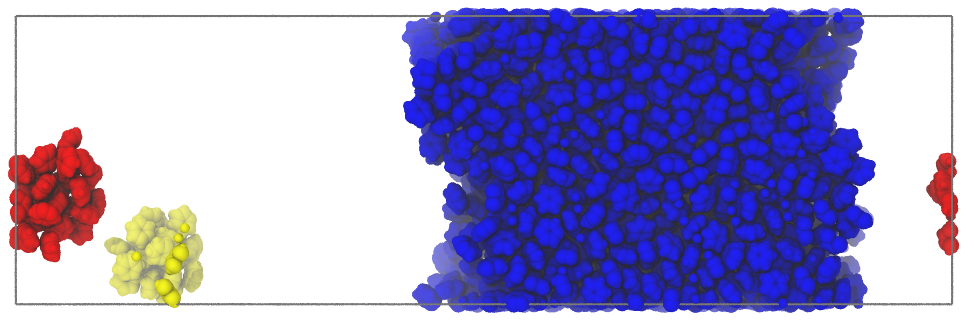

New properties of Atoms¶
Summary¶
Pytim adds some new properties to the Atoms class of MDAnalysis.
This tutorial shows what they are and how to used them.
Background¶
After computing for the first time the interfacial atoms/molecules
in a system (this is true for classes like ITIM
and GITIM, but not for
WillardChandler) some new properties
are added to all atoms in the universe: layers, clusters
and, in case of ITIM, also sides.
Note that, differently from what happens in MDAnalysis, also some of the standard properties (e.g. radii, tempfactors, bfactors, elements) will always be associated to the atoms, even if the information is not present in the configuration file/trajectory (some heuristics is used by Pytim to guess their values)
Layers¶
The value of atoms.layers can be either -1 (atom not in any of the layers) or 1, 2, 3,…, max_layers
>>> import numpy as np
>>> import MDAnalysis as mda
>>> import pytim
>>> from pytim.datafiles import WATER_GRO
>>> u = mda.Universe(WATER_GRO)
>>> g = u.select_atoms('name OW')
>>> inter = pytim.ITIM(u,group=g,max_layers=3)
>>> print (np.unique(u.atoms.layers))
[-1 1 2 3]
This property can be used to select a particular subset of atoms, e.g.
>>> # select all hydrogens in the first layer
>>> condition = np.logical_and(u.atoms.layers == 1 , u.atoms.types=='H')
>>> u.atoms[condition]
<AtomGroup with 1048 atoms>
Clusters¶
The value of atoms.clusters can be -1 if the atom is not in a
cluster (or not in the group for which the cluster search is
performed) or 0,1,… if it belongs to the largest cluster,
second-to-largest cluster, and so on, respectively.
For example, the benzene molecules in ILBENZENE_GRO are labelled automatically
according to the cluster they belong when calling:
>>> import pytim
>>> import MDAnalysis as mda
>>> from pytim.datafiles import ILBENZENE_GRO
>>> import numpy as np
>>> u = mda.Universe(ILBENZENE_GRO)
>>> g = u.select_atoms('resname LIG')
>>> inter = pytim.ITIM(u,group=g,cluster_cut=7.5,cluster_threshold_density='auto',normal=2)
>>> np.sum(g.clusters==0)
19200
>>> np.sum(g.clusters==1)
372
>>> np.sum(g.clusters==2)
264
>>> np.sum(g.clusters==3) # no more clusters...
0
>>> # the remaining benzene molecues are not clustering
>>> # (i.e., isolated according to the criterion chosen)
>>> np.sum(g.clusters==-1)
10164
The option tempfactors of writepdb()
can be used to save to a pdb file, instead of the information about
the layers (default), the cluster labels:
>>> inter.writepdb('/tmp/clusters.pdb',tempfactors=u.atoms.clusters)
This results in the following (isolated molecules not shown)
|  |
{kind=link}
Sides¶
The value of atoms.sides can be -1, 1, or 0 depending whether the atom is in one of the upper half layers, in the
one of the lower half layers, or not in any layer. This properties is working only in ITIM.